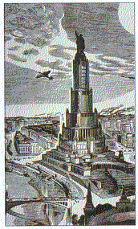

Tour de ville panoramique :
Cathédrale du Christ -Sauveur

Rasée sur lordre de Staline en 1931, pour être
remplacée par un Palais des Soviets, une
gigantesque tour de 315 m surmontée
d'une statue de Lénine de 100 m, sa
reconstruction aura été lun des projets les plus
ambitieux du maire de Moscou, Iouri Loujkov.
Elle occupe la place dune immense piscine
installée ici en 1960. La construction eut lieu entre
1994 et 1997.
En dépit d'un décret qui stipulait que le financement
serait privé, la plus grande partie de la note
(200 millions de dollars) fut payée par le budget de
lEtat, malgré la pauvreté de la population. A lorigine
cette église commémorait la victoire dAlexandre Ier
sur Napoléon et sa construction fut confiée à
Constantin Thon, spécialiste du style « historiciste »
(1883)
|